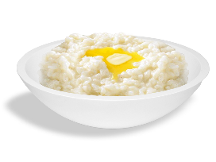

Учимся Quarto и работе на Github
О Quarto
Quarto — это бесплатная открытая публикационная система основаная на Pandoc.
- Позволяет создавать проекты в Python, R, Julia, и Observable
- Для создания документов используется разметка markdown (которую мы изучим)
- Позволяет создавать документы, отчеты, презентации, сайты, блоги, книги в HTML, PDF, MS Word, ePub, и некоторых других форматах.
- Включает в себя расширения markdown разметки, которые позволяют писать формулы, цитировать литературу, обращаться к фрагментам текста, размещать графикик и т. п.
Мы будем создавать на quarto веб-сайт.
Github
Github — это крупнейшая платформа для разработки софта. В ее основе лежит система версионирования git, которая отслеживает и фиксирует изменения. Нам она интересна лишь одним: она ставит преграды на пути случайного уничтожения чужой работы.
Мы будем использовать github как бесплатную платформу для хостинга нашего сайта, но это совершенно не обязательно, полученные html можно передвигать куда угодно.
Markdown разметка
Заголовки разного уровня – задаются количеством # перед текстом. Еще нужно оставлять пустые строки перед и после заголовка.
Базовое форматирование
**жирное**– жирное*курсив*– курсив[поменять цвет]{style="color: red;"}– поменять цвет[подчеркивание]{.underline}– подчеркивание~~зачеркивание~~зачеркивание- минус
-- - дефис
--– - тере
---— [ссылка на наш сайт](https://agricolamz.github.io/2023.02.16_lets_learn_quarto/first_example.html)ссылка на наш сайт
{width=300}{width=80%}
см. туториал про вставку картинок
Для таблиц есть особый язык. См. туториал. Еще можно вставить в генератор таблиц.
::: {.callout-tip}
## Tip With Caption
This is an example of a callout with a caption.
:::This is an example of a callout with a caption.
Цитаты
Чтобы вставить цитату, нужно перед строчкой поставить >
Большая цитата Большая цитата Большая цитата Большая цитата Большая цитата Большая цитата Большая цитата Большая цитата Большая цитата Большая цитата Большая цитата Большая цитата Большая цитата Большая цитата
Сноски
Мой дядя самых честных1 правил, когда не в шутку занемог, он уважать2 себя заставил и лучше выдумать не мог.
Панели
::: {.panel-tabset}
### панель 1
Что-нибудь Что-нибудь Что-нибудь Что-нибудь Что-нибудь Что-нибудь Что-нибудь Что-нибудь Что-нибудь Что-нибудь Что-нибудь
### панель 2
Кто-нибудь Кто-нибудь Кто-нибудь Кто-нибудь Кто-нибудь Кто-нибудь Кто-нибудь Кто-нибудь Кто-нибудь Кто-нибудь
:::Что-нибудь Что-нибудь Что-нибудь Что-нибудь Что-нибудь Что-нибудь Что-нибудь Что-нибудь Что-нибудь Что-нибудь Что-нибудь
Кто-нибудь Кто-нибудь Кто-нибудь Кто-нибудь Кто-нибудь Кто-нибудь Кто-нибудь Кто-нибудь Кто-нибудь Кто-нибудь
Колонки
::: {layout-ncol=2}
Ваш текст
:::Международная лаборатория языковой конвергенции была создана в 2017 году на базе Школы лингвистики факультета гуманитарных наук.
Цель лаборатории - исследование механизмов конвергентных процессов в истории языка, то есть языковых ситуаций, при которых контакт между носителями разных языков ведет к появлению у этих языков общих черт. В лаборатории разрабатываются инструменты для выявления результатов таких процессов по данным электронных корпусов устной речи.
Если эволюция в природном мире в значительной степени объясняется приспособлением к условиям обитания, то причины, по которым меняется язык, до сих пор не вполне ясны. Языковые изменения как таковые являются традиционным объектом изучения истории языка. В классическом сравнительно-историческом языкознании акцент обычно делается, во-первых, на использовании материалов письменной истории и, во-вторых, на изучении языковой дивергенции. Начиная с середины прошлого века в социолингвистике активно разрабатываются методы моделирования языковых изменений через анализ синхронных данных языковой вариативности и, начиная с конца прошлого века, методы анализа процессов языковой конвергенции. Доступные в настоящее время технологии фиксации устной речи и создания электронных корпусов спонтанных текстов с доступом к аудиоданным позволяют работать с большими объемами данных и применять современные статистические методы анализа.
Основным объектом исследований Лаборатории является роль языковых контактов в истории языков России. Мы проводим полевые исследования языков Дагестана, адыгейского, марийского, эвенского языков, северных диалектов русского языка, а также тех вариантов русского языка, которые формируются в условиях языкового контакта.
Ключевой задачей лаборатории является создание новых корпусов, в частности звуковых, которые позволяют автоматический поиск по аудиозаписи. Мы создаем и поддерживаем открытые онлайн-базы данных вариативных и контактных явлений в языках и диалектах России.

Автопроверяющиеся задания
Просто вписать:
```{r}
check_question(answer = "кефира",
wrong = "Неверно",
right = "Верно!",
button_label = "Проверить")
```
Выпадающее меню:
```{r}
check_question(answer = "чай",
options = c("пиво", "кофе", "чай", "молоко"),
wrong = "Неверно",
right = "Верно!",
button_label = "Проверить")
```
Невыпадающее меню
```{r}
check_question(answer = "чай",
options = c("пиво", "кофе", "чай", "молоко"),
type = "radio",
wrong = "Неверно",
right = "Верно!",
button_label = "Проверить")
```
Множественный выбор:
```{r}
check_question(answer = c("чай", "молоко"),
options = c("пиво", "кофе", "чай", "молоко"),
type = "checkbox",
wrong = "Неверно",
right = "Верно!",
button_label = "Проверить")
```